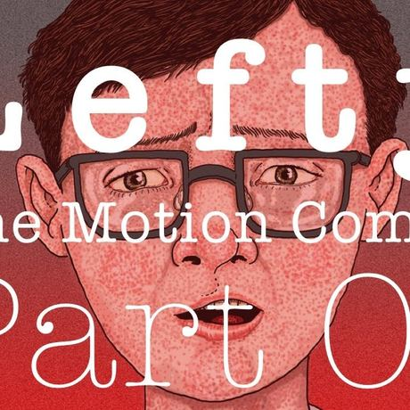

Extras
6 things
A motion comic, a walking tour of Kilkenny, a radio show, the documentary club, press coverage and podcast production.
-

Yarn Podcast Production
Looking to create a podcast that captivates listeners? Whether it's a personal project or a commercial production, I offer expert podcast production services to bring your vision to life — crafted by the award-winning producer of Yarn, winner of Best Factual Podcast at the Irish Podcast Awards.
-

Thread Radio
From the makers of the Yarn story podcast comes this radio show. Dedicated to recommending podcasts, movies, documentaries, YouTube channels, music.. basically anything that makes a sound.
-

Audio Walking tour
Discover Kilkenny’s Epic History on Your Own Terms! This self-guided audio walking tour is the perfect way to explore The Marble City.
-

Lefty: The Motion Comic
An animated comic book version of Yarn 05, Lefty, the story of a left leg with a mind of its own.
-
Coverage Press
Press
Reviews, features and awards, from The Guardian to the Irish Examiner.
-
448 films Documentary Club
Yarn Documentary Club
A personal list of the best documentaries made since 1985, 448 of them, grouped into 61 themes and rated out of three.